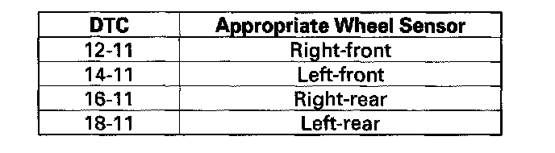

DTC 12-11
DTC 12-11: Right-front Wheel Sensor Electrical Noise or Intermittent InterruptionDTC 14-11: Left-front Wheel Sensor Electrical Noise or Intermittent Interruption
DTC 16-11: Right-rear Wheel Sensor Electrical Noise or Intermittent Interruption
DTC 18-11: Left-rear Wheel Sensor Electrical Noise or Intermittent Interruption
NOTE: These DTCs may be caused by electrical interference. Check for aftermarket devices installed in the vehicle when these DTC are indicated.
1. Turn the ignition switch ON (II).
2. Clear the DTC with the HDS.
3. Test-drive the vehicle.
4. Check for DTCs with the HDS.
Is DTC 12-11, 14-11, 16-11, and/or 18-11 indicated?
YES - If the DTC 12-12, 14-12, 16-12, or 18-12 is indicated at the same time, do the DTC 12-12, 14-12, 16-12, or 18-12 troubleshooting. If DTC 12-12, 14-12, 16-12 or 18-12 is not indicated, go to step 5.
NO - Troubleshoot the indicated DTC. if there are no DTCs indicated, there may be an intermittent failure, the system is OK at this time. Check for loose terminals between the wheel sensor 2P connector and the VSA modulator-control unit 37P connector. Refer to intermittent failures troubleshooting.
5. Turn the ignition switch OFF.
6. Check that the appropriate wheel sensor is properly mounted.

Is the wheel sensor installation OK?
YES - Check for loose terminals in the VSA modulator-control unit 37P connector. If necessary, substitute a known-good VSA modulator-control unit, and retest.
NO - Reinstall the wheel sensor, and check the mounting position.